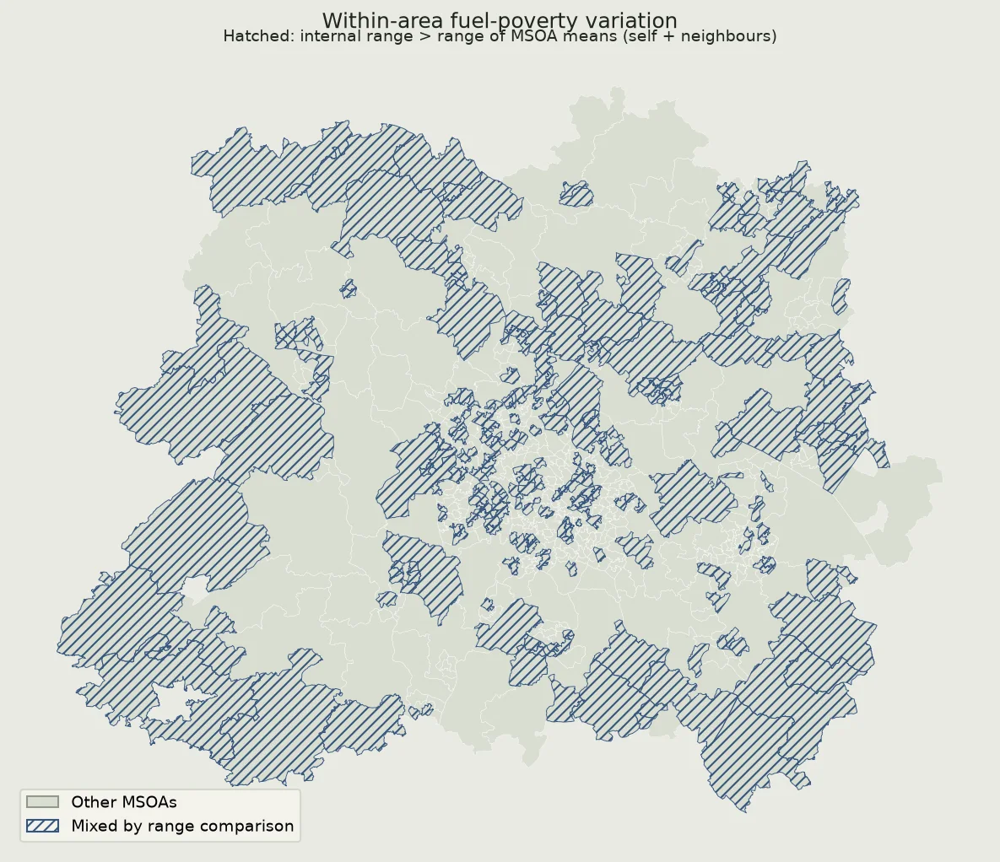
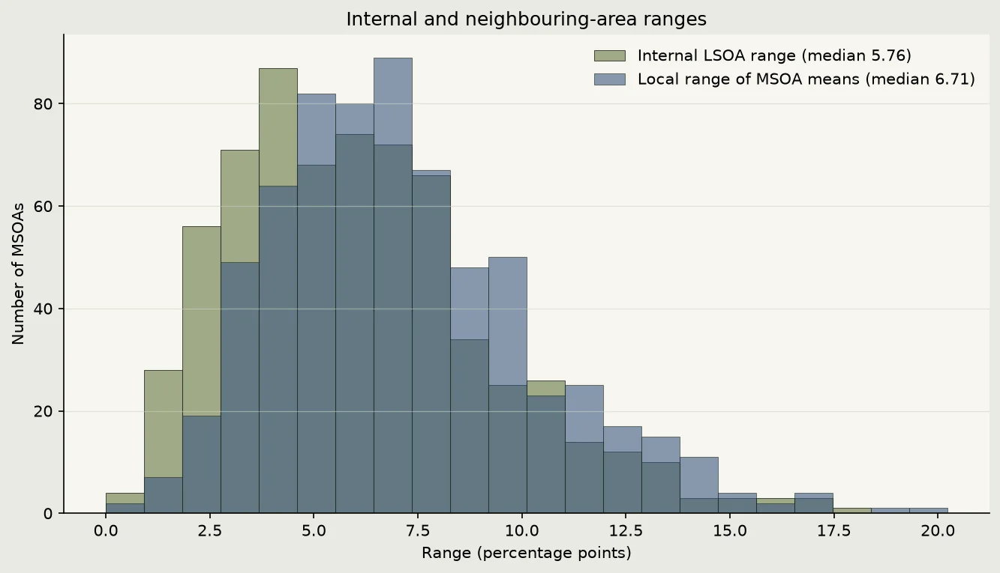

Chapter S16
What aggregation hides
An MSOA mean does not show all the variation among its component LSOAs.
In short
Across the 3,205 LSOA fuel-poverty percentages, 30.3% of the total variance is within MSOAs and 69.7% is between LSOA-count-weighted MSOA means. A separate like-for-like range rule flags 255 of 660 MSOAs (38.6%).
What I compared
The 2024 fuel-poverty data from DESNZ give a percentage for each LSOA. I map those records to MSOAs using the saved ONS geography lookup.
I calculate the unweighted mean of the LSOA percentages inside each MSOA. Each LSOA contributes once, whatever its household count. The variance decomposition treats all 3,205 LSOAs equally overall: the within component is the LSOA-count-weighted average of within-MSOA variances, and the between component is the LSOA-count-weighted variance of MSOA means. The components add to the total variance of the LSOA percentages.
- 30.3%
- of variance is within MSOAs
- 69.7%
- between LSOA-count-weighted MSOA means
- 255 of 660 (38.6%)
- meet the like-for-like mixed-area rule
In plain terms, about three tenths of the variation among LSOA percentages lies within MSOAs; the other seven tenths is between their means. The total variance is 21.0712 percentage-points squared: 6.3883 within and 14.6829 between.
A separate range comparison
For each MSOA, I compare the range of its component LSOA percentages with the range of unweighted MSOA means across that area and its Notebook 04 neighbours. Both are ranges in percentage points, and the flag is true only when the internal range is strictly larger. The median internal range is 5.76 percentage points; the median local range of MSOA means is 6.71 percentage points.


Reading the result
The decomposition shows that there is variation among LSOA percentages both within and between MSOAs; an MSOA mean alone does not show its internal component. The separate flag identifies where the internal range is larger than the local range of MSOA means. Neither result explains why places differ, and neither is a test of statistical significance.
Limits
An LSOA percentage is an area summary, not an individual household observation. The MSOA mean gives each LSOA equal weight rather than each household, so it is not the same as pooling fuel-poor households across LSOAs. The variance split describes variation among those area percentages. The range flag depends on the saved geography, Notebook 04's neighbour definition and the endpoints of each range; it does not measure every difference in the distributions.
What this means ethically
I use the results to make the effects of aggregation visible, not to rank or label communities. A hatched MSOA is not a claim about every LSOA, household or person inside it. These area-level summaries cannot support claims about an individual or guide decisions about people.